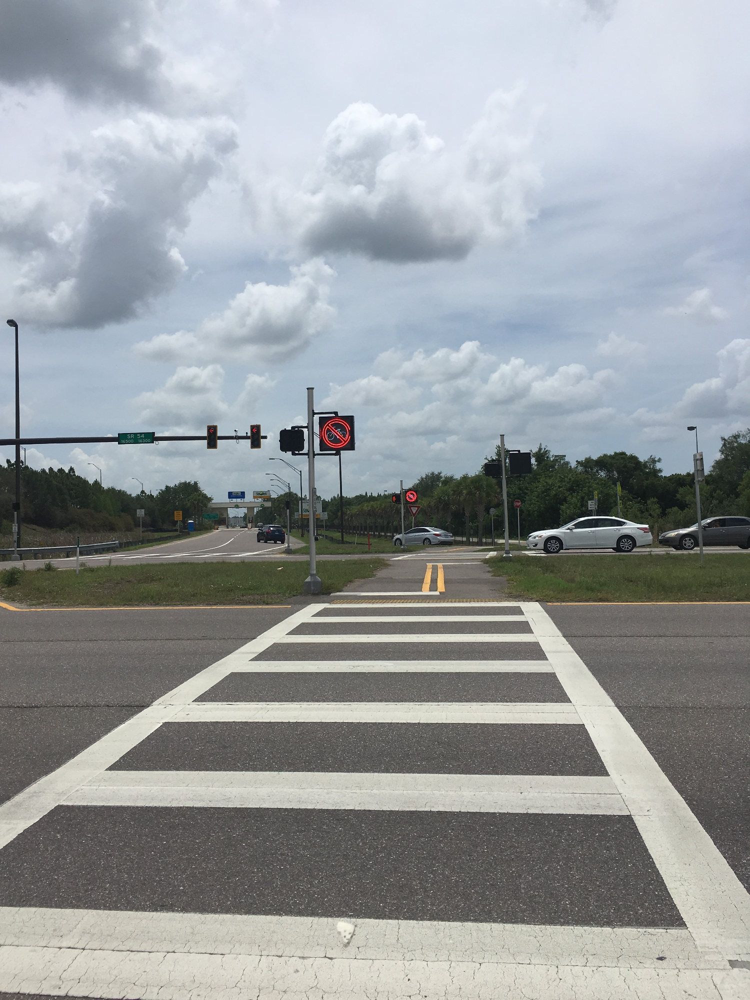

Pinellas Trail
The Pinellas Trail is (mostly) awesome. It's about 50 miles long, goes from St. Petersburg to Tarpon Springs and has a wide variety of scenery. Here is a rundown of some of the sections of the Pinellas Trail:
Downtowns.
You will see the downtowns of Dunedin, Clearwater, Tarpon Springs, and St. Petersburg along with their associated cool restaurants, bike shops, and antique shops (among other things). Shady residential areas.
"Shady" meaning "lots of trees to block that brutal Florida sun." Pretty, quiet, pleasant.Really shady residential areas.
Some neighborhoods are nicer than others, let's just say. Use caution; luckily, crime is relatively rare.Bumpkinville.
The Pinellas Trail now has a section going through completely undeveloped territory! See deer, cows, and horses, oh my!
One thing to note is there are a lot of crossings, some of which are super dangerous. Pinellas drivers are probably no more foolish than other people, there's just so many of them which can cause chaos and havoc. All in all though, the Pinellas Trail is a beautiful, interesting trail with lots to see and lots to do.
Back to top
Suncoast Trail

The Suncoast Trail goes from Hernando through Pasco and Hillsborough County and is great for cycling long distances without too many crossings. There's also a little bit of Florida's version of serious climbing near the north end. The Starkey Wilderness Trail connects to this near SR 54, which is serene and natural.
There are some very pretty areas with trees and nature and animals. However, the scenery can get samey, especially in the Pasco section. For most of the trail you are right next to the Suncoast Parkway so there is tons of traffic noise and this also cuts down on scenery potential. But hey, no tolls unlike those silly cagers.
Back to top
Upper Tampa Bay Trail
The Upper Tampa Bay Trail is short but sweet at around 5 miles (not including the section attached to the Suncoast Trail). There aren't too many crossings, but there is a lot of scenery. Some of the views are incredible! Enjoy water and greenery and just general gorgeousness. There are sections near major highways but there is still plenty of foliage to mask the worst of it. There are a few businesses who realized that cyclists spend a crapload of money right along the trail one can check out as well.
There are plans in the works to extend this very popular, very lovely trail; it will ultimately connect to the segment attached to the Suncoast Trail.
Back to top
General James A. Van Fleet Trail
The Van Fleet trail goes roughly 30 miles from Bummieville, Polk County to Bumpty, Lake County. This trail is simply gorgeous, darling! There are farms, deer, tortoises, and 50,432,434 trees and other plants. This trail offers no challenge as far as climbing or curves because the goal is to embrace your inner tree hugger with every mile spent. However, there are gators! They generally don't concern themselves much with the humans. But if the thought of biking/walking by gators hanging out like 5 feet from the trail terrifies you, steer clear of this one (which isn't hard to do because nobody lives here).
Back to top
West Orange Trail
Let me tell you WOT is going on with this trail here. This is a 26 mile trail that will feel familiar to anyone who's used the Pinellas Trail (even down to the naming convention!). There are downtown sections, overpasses, and tree-y sections just like the Pinellas Trail.
The wide variety of scenery is nice and the crossings are generally easy to deal with. This trail is near Orlando, but does not actually go through the city due to the fact that Orlando has 344,3434,356 cars driving through it every second and you'd have an 85.4% likelihood of getting hit by one of them.
Back to top